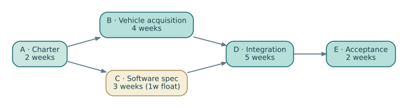

Northstar NS-M1 — a controlled project management case
This fictional case provides one reproducible set of quantities across all twelve chapters of the Management of Systems Projects companion (EN.645.667). It is intentionally linked to the technical NS-B1 case in Book 1, but the management and technical baseline identifiers are different.
Three distinct kinds of controlled facts
- Technical baseline NS-B1: requirement IDs, hazard assumptions, interface allocation and test-evidence configuration. Book 1 case.
- Management baseline NS-M1: five cost accounts totaling $7.2M, plus separately defined $0.6M management reserve and $0.6M illustrative fee for a teaching offer of $8.4M.
- Illustrative status at month five: PV $3.0M, EV $2.4M, AC $2.7M. The earned-value formulas produce CPI 0.8889, SPI 0.8000 and a sustained-CPI EAC $8.1M. These are synthetic reporting quantities, not real performance observations.
The 13-week five-activity network is a small network demonstration, not the whole program schedule or a forecast to complete the entire shuttle project. Its result is 13 weeks, with one week of float on activity C. Changing C from 3 to 5 weeks moves the finish to 14 weeks.

Inspect and reproduce
- Controlled management assumptions (JSON)
- Editable control accounts (CSV)
- Decision register with intentionally open decisions (CSV)
- Schedule network source (DOT) and diagram (SVG)
- Cross-baseline claim chain (SVG)
- Python arithmetic and consistency checker


Run python3 SE/K/B2/tools/step03_book2_project_check.py from the repository root. It checks the agreement between the CSV and JSON inputs, financial totals, EV measures, schedule logic and risk arithmetic. A green result does not establish actual supplier delivery, estimate accuracy, safety, or contractual authorization.
Investigations
- Reduce CA-02 earned value to $0.50M without changing actual spending. Recalculate aggregate CPI, EAC and the variance at completion. Why is this not merely a reporting correction?
- Increase activity C to six weeks. Recompute the early dates and explain the changed controlling path.
- If an unbudgeted test fixture requires $150,000, decide whether the issue is omitted in-scope work, changed scope or a risk realization. Show how each interpretation would alter the authorized control process.
- Attempt to change NS-B1 to a new technical revision without updating the evidence in the decision register. Explain which proposed readiness claim can no longer be supported.
Editorial note: These materials are original synthetic teaching examples. No proprietary standards are reproduced. For source-specific cost, schedule and EVM methods consult GAO Cost Guide, GAO Schedule Guide, the DOE EVM guidance, and the NASA Systems Engineering Handbook.